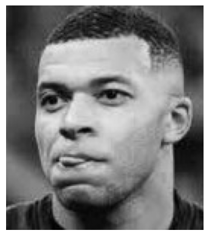

Reconnaissance de motifs
la reconnaissance de motifs par fenêtre glissante (sliding window) consiste à déplacer un patch sur toute l’image source pixel par pixel, de gauche à droite puis de haut en bas, en utilisant comme référence la position du coin supérieur gauche (top-left) du patch et non son centre ; à chaque position, le patch recouvre une zone de même taille dans l’image et une métrique de similarité (comme la somme des différences ou la corrélation) est calculée pour mesurer à quel point le motif correspond à cette zone, ce qui permet d’identifier les positions où le patch est le plus similaire à l’image et donc les emplacements probables du motif recherché.
On compte differente méthodes :
- 'TM_CCOEFF'
- 'TM_CCOEFF_NORMED'
- 'TM_CCORR'
- 'TM_CCORR_NORMED'
- 'TM_SQDIFF'
- 'TM_SQDIFF_NORMED'
Elle marche toute un peux differenment (TM_SQDIFF_NORMED et TM_SQDIFF donne un match pour la valeur la plus basse), il est donc interresant de toute les tester dans un nouveau cas.
Les différentes justification mathématique sont assez longue je vous donne donc la page OPENCV qui traite de ces fonctions
On utilise la fonction matchTemplate() pour chercher les correlation entre image source et la template puis minMaxLoc() pour avoir les differents matchs dans l'image :
Exemples
Template
Partie creation de la template Python
import cv2 as cv
import numpy as np
from matplotlib import pyplot as plt
img = cv.imread('pose.jpg', cv.IMREAD_GRAYSCALE) # l'image dans laquel on va chercher le patern
if img is None: #on a une methode plus pratique en dessous
print("Erreur : impossible de charger l'image.")
else:
# Convert BGR (OpenCV) to RGB (matplotlib) --> on fait ça car imshow() de base fait crash le kernel
image_rgb = cv.cvtColor(img, cv.COLOR_BGR2RGB)
# Display with matplotlib
plt.imshow(image_rgb)
plt.axis('off') # Hide axes
plt.show()
img2 = img.copy()
template = cv.imread('MBAP.jpg', cv.IMREAD_GRAYSCALE) # l'image que l'on recherche
assert template is not None, "file could not be read, check with os.path.exists()"
w, h = template.shape[::-1]
# .shape donne hauteur,largeur et le ::-1 inverse largeur, hauteur (template.shape[:2] marche aussi)
template_rgb = cv.cvtColor(template, cv.COLOR_BGR2RGB)
plt.imshow(template_rgb)
plt.axis('off')
plt.show()
Resultats differents Matching
Partie template matching Python
# All the 6 methods for comparison in a list
methods = ['TM_CCOEFF', 'TM_CCOEFF_NORMED', 'TM_CCORR',
'TM_CCORR_NORMED', 'TM_SQDIFF', 'TM_SQDIFF_NORMED']
# TM_SQDIFF_NORMED et TM_SQDIFF the lowest point give the ebst match les autres c'est l'inverse
for meth in methods:
img = img2.copy()
method = getattr(cv, meth)
# en gros ça va chercher les methode dans la librairie opencv et ça les associe a la variable method
# Apply template Matching
res = cv.matchTemplate(img,template,method)
min_val, max_val, min_loc, max_loc = cv.minMaxLoc(res)
#trouve resp le min, max pos_min(x,y), pos_max(x,y) dans un array
# If the method is TM_SQDIFF or TM_SQDIFF_NORMED, take minimum
if method in [cv.TM_SQDIFF, cv.TM_SQDIFF_NORMED]:
top_left = min_loc
else:
top_left = max_loc
bottom_right = (top_left[0] + w, top_left[1] + h)
cv.rectangle(img,top_left, bottom_right, 255, 10) # les chiffre a la fin sont intensité et largeur bordure
plt.subplot(121),plt.imshow(res,cmap = 'gray')
plt.title('Matching Result'), plt.xticks([]), plt.yticks([])
plt.subplot(122),plt.imshow(img,cmap = 'gray')
plt.title('Detected Point'), plt.xticks([]), plt.yticks([])
plt.suptitle(meth)
plt.show()
Si le motif recherché n’est pas un simple rectangle plein — par exemple s’il contient de la transparence ou un trou au milieu — ou si le fond est très bruité, il est possible d’utiliser un masque (mask) lors du template matching. Ce masque, fourni à matchTemplate, est une image binaire de la même taille que le template : les pixels noirs (0) sont ignorés, les pixels blancs (255) sont pris en compte. Cela permet de se concentrer sur les zones pertinentes du motif et d’améliorer la robustesse de la détection. Attention : cette fonctionnalité n’est supportée que par certaines méthodes, comme TM_SQDIFF et TM_SQDIFF_NORMED.
Le template matching reste pertinent uniquement si l’objet recherché est très proche du template (même forme, orientation et échelle) ; en cas de fond bruité ou de variations visuelles, il devient peu robuste, sauf si l’on applique au préalable une détection de contours afin de comparer principalement les bordures plutôt que les intensités de pixels.